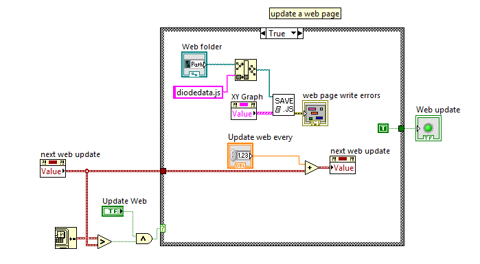
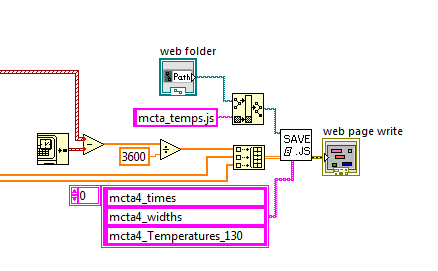

Labview - MJSplot integration
Nav:[XY Graphs] [2D Arrays] [Time Series]
Seeing data as it's recorded while at home was a big motivation for MJSplot.
With these example integration methods I hope you will read the source code and make modifications as you need them.
XY graph
The easiest way. If you can get your data to plot on labview's xy graph front panel object, you can route the graph line (think pink) to XYGraph_to_Javascript3.vi. This box does the formatting and will write a .js with each line of the xy graph in variables x0=[...]; y0=[...]; x1=[...];y1=[...]; etc. You will write a page that uses this.
Implementation Idea:
In this example I use a reference to an xy graph rather than the graph itself, but the direct connection would work too.'Web folder' is a folder select front panel object that can point to the webserver. This example is in a stacked frame sequence in the main loop and runs with a 'next web update' time, this means the the data written to the web only every 60s ('Update web every') so the server isn't hit to often. All optional of course.
2D Array
2d_array_to_Javascript_2.vi and it's sub-vi: array_to_Javascript_variable.vi.
The better way. In this example I have a time array and two data arrays that I want to see online as a XYY graph (sharing a common x).
Time in converted to relative time in hours. The 'web folder' is the same as the above example. The time array and my two data arrays are fed into an array that goes to the 'save .js' box. The variable names you want are an array of strings, this means you can have different graph plotting to the same webpage without hitting namespacing problems.
XYY Time Series Graph
With version 2_2_14 MJSplot can use time data nativly. One way to use this is to write out the times from labview in an importable way. The new labview box is called time_series_to_js.vi and it uses TimeArrayToStrings.vi and stringarray_to_Javascript_variable.vi to work.
The implementation is very similar to before:

The big difference is the the labview timestamps are feed in and converted internally. The time variable needs naming so one additional imput is needed.

Once the data is loaded into the browser you will need two lines like
times = convert_time_strings(mcta4_times);
and
your_graph.default_graphics_style.x_scale_mode = "time";